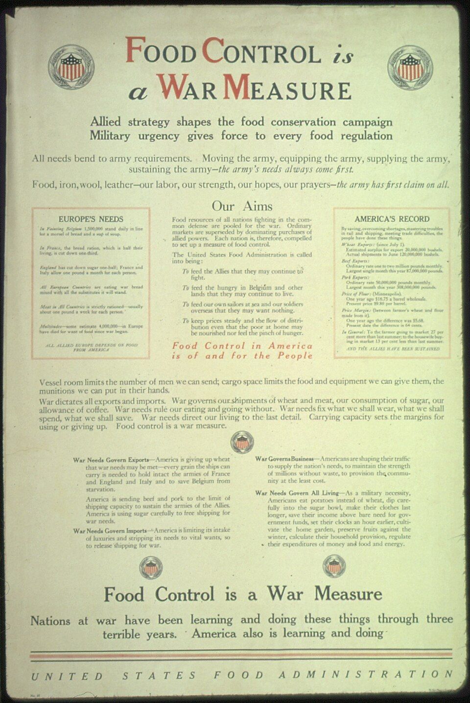

1910 · Fannie Merritt Farmer · COOKERY
How to Measure
The Boston Cooking-School Cook Book

Historical Recipe
The following text is extracted from the 1910 edition, retaining historical terminology and quantities.
Original Ingredients & Directions
Correct measurements are absolutely necessary to insure the best results. Good judgment, with experience, has taught some to measure by sight; but the majority need definite guides.
Tin, granite-ware, and glass measuring cups, divided in quarters or thirds, holding one half-pint, and tea and table spoons of regulation sizes,—which may be bought at any store where kitchen furnishings are sold,—and a case knife, are essentials for correct measurement. Mixing-spoons, which are little larger than tablespoons, should not be confounded with the latter.
Measuring Ingredients. Flour, meal, powdered and confectioners’ sugar, and soda should be sifted before measuring. Mustard and baking-powder, from standing in boxes, settle, therefore should be stirred to lighten; salt frequently lumps, and these lumps should be broken. A cupful is measured level. To measure a cupful, put in the ingredient by spoonfuls or from a scoop, round slightly, and level with a case knife, care being taken not to shake the cup. A tablespoonful is measured level. A teaspoonful is measured level.
To measure tea or table spoonfuls, dip the spoon in the ingredient, fill, lift, and level with a knife, the sharp edge of knife being toward tip of spoon. Divide with knife lengthwise of spoon, for a half-spoonful; divide halves crosswise for quarters, and quarters crosswise for eighths. Less than one-eighth of a teaspoonful is considered a few grains.
Measuring Liquids. A cupful of liquid is all the cup will hold.
A tea or table spoonful is all the spoon will hold.
Measuring Butter, Lard, etc. To measure butter, lard, and other solid fats, pack solidly into cup or spoon, and level with a knife.
When dry ingredients, liquids, and fats are called for in the same recipe, measure in the order given, thereby using but one cup.
26 How to Combine Ingredients
Automatically extracted transcription; editorial verification pending. Historical instructions may not meet modern food-safety standards.